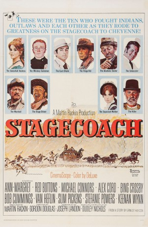
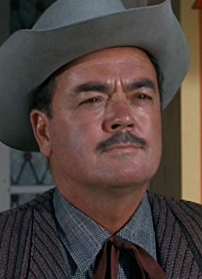

#5200 San Fernando
Alternativ: Stagecoach
 
 IMDB-Wertung: 6.0 / 10
IMDB-Wertung: 6.0 / 10  Metascore: 0
Metascore: 0 
Sieben absolut unterschiedliche Menschen sitzen in einer Postkutsche auf dem Weg nach San Fernando: ein Mädchen, das in einem Saloon arbeitet, aber die Stadt verlassen musste, ein alkoholabhängiger Arzt, ein Schnapsverkäufer, ein halbkrimineller Banker, ein professioneller Spieler, ein Revolverheld und eine junge Frau, die nur zu ihrem Mann gelangen will. Diese wenig harmonische Truppe geht sich gegenseitig auf die Nerven, muss sich jedoch schleunigst disziplinieren, als sie durch Indianergebiet reitet und angegriffen wird. Plötzlich gilt ausschließlich der blanke Überlebenswille dieser Gruppe und sie muss alle Kräfte bündeln um lebend aus dem feindlichen Gebiet zu entkommen und San Fernando zu erreichen.
Jahr: 1966
Dauer: 114 Minuten
FSK: 16
Land: USA Studio: Twentieth Century-Fox Film CorporationTonspuren: DD2.0 - ,
Untertitel:
Auflösung: 1080p (1920x816) Größe: 5058 MB
Genre: Action, Abenteuer, Western
Regisseur: Gordon Douglas
Drehbuch: Chris Shafer
Soundtrack:
Darsteller:
 Ann-Margret als Dallas
Ann-Margret als Dallas Red Buttons als Peacock
Red Buttons als Peacock- Mike Connors als Hatfield
- Alex Cord als Ringo Kid
- Bing Crosby als Doc Josiah Boone
- Robert Cummings als Henry Gatewood
 Van Heflin als Marshal Curly Wilcox
Van Heflin als Marshal Curly Wilcox Slim Pickens als Buck - Stagecoach Driver
Slim Pickens als Buck - Stagecoach Driver- Stefanie Powers als Mrs. Lucy Mallory
 Keenan Wynn als Luke Plummer
Keenan Wynn als Luke Plummer- Norman Rockwell als Townsman
 Robert Adler als Clem , uncredited
Robert Adler als Clem , uncredited- Brad Weston als Matt Plummer
- Joseph Hoover als Lt. Blanchard
- John Gabriel als Capt. Jim Mallory
- Oliver McGowan als Mr. Haines
- David Humphreys Miller als Billy Pickett
- Bruce Mars als Dancing Trooper
- Brett Pearson als Drunken Sergeant
- Muriel Davidson als Mrs. Ellouise Gatewood
- Ned Wynn als Ike Plummer
- Edwin Mills als Sergeant Major
- Hal Lynch als Jerry - Bartender
- The Westernaires als
-  Harry Carter als Poker Player , uncredited
 Walker Edmiston als Cheyenne Wells Fargo Agent , uncredited
Walker Edmiston als Cheyenne Wells Fargo Agent , uncredited- Kam Tong als Waldo , uncredited
Datei: X:\HD-Western-1960-1979\San Fernando (1966, FSK16, 1920x816).mkv seit 29.12.2016
Festplatte: HD Eastern+Western
 Es gibt insgesamt 110 Filme in der Gruppe 'HD-Western-1960-1979'
Es gibt insgesamt 110 Filme in der Gruppe 'HD-Western-1960-1979'